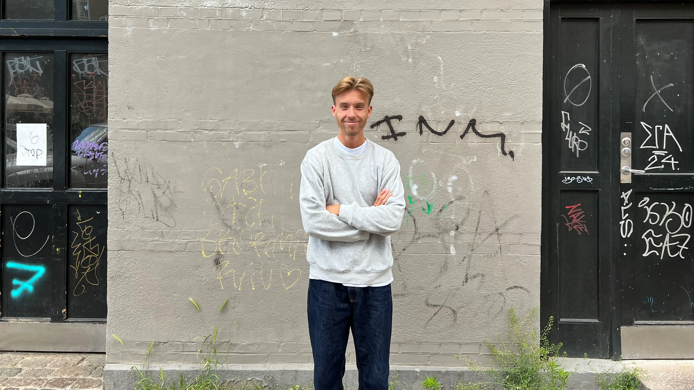

THE
CV!
CV!
CV!

Telefon +45 xx xx xx xx
OM
Hejsa!
Jeg hedder Oliver Larsen, er 24 år gammel og studerer Multimediedesign på 1. semester.
Min store passion er skisport, som jeg har dyrket siden barndommen. Det har ført til mange
fantastiske skiferier fyldt
med sjov og eventyr sammen med venner og familie. Der er intet, der slår følelsen af at suse ned ad
pisterne og mærke
vinden i ansigtet, mens man nyder den smukke vinterudsigt.
Men skisport er ikke det eneste, der fylder i mit liv. Når jeg ikke står på ski, elsker jeg at holde
mig i form med
løbetræning. Det giver mig en fantastisk følelse af frihed og energi, og det er en perfekt måde at
klare hovedet på
efter en lang dag med studier.
Jeg sætter også stor pris på at tilbringe tid sammen med mine venner og familie. Uanset om vi er ude
at spise, ser en
film eller bare hygger os derhjemme, værdsætter jeg de gode stunder og de stærke bånd, vi deler.
Så kort sagt, mit liv er en blanding af spændende skieventyr, løbetræning og kvalitetstid med dem,
jeg holder af, alt
imens jeg arbejder mig igennem studierne og lærer en masse spændende ting om multimediedesign.
CV
Fritidsinteresser -
• Løb
• En god tur i byen
Stærke sider -
• Kodning
• Research
• Mødestabil til Anders, Gullan, Mikkel og Peters timer
Svage sider -
• Animering
• Designprincipper
• Prototype